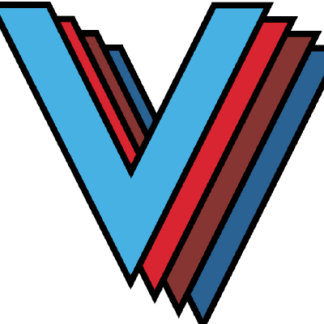

<ul class="globaltoc">
  <li class="toctree-l1"><a href="http://veloc.readthedocs.io/en/latest/">Home</a></li>
</ul>
{{ toctree(maxdepth=2, collapse=False, includehidden=theme_global_includehidden|tobool) }}
